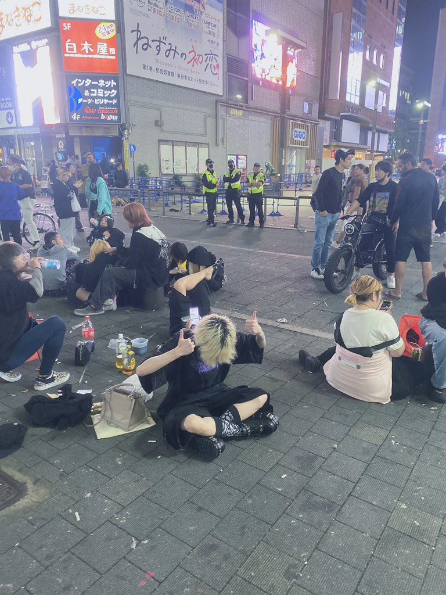
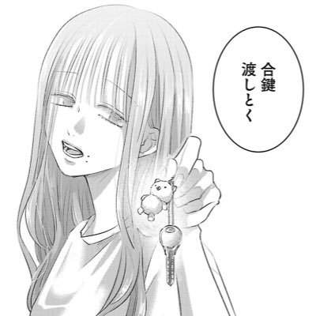

箸
@breakcoreWTF
RT @emu_ddd_ume: 🏷*.+ﾟ自介🐼
えむEmu
† ｰｰｰｰｰ † ｰｰｰｰｰ † ｰｰｰｰｰ † ｰｰｰｰｰ †
希死念慮/社不/病み/自傷/OD
友達募集/メンヘラ
† ｰｰｰｰｰ † ｰｰｰｰｰ † ｰｰｰｰｰ † ｰｰｰｰｰ †
🇭🇰
最近常在這裡…


えむ
@emu_ddd_ume
🏷*.+ﾟ自介🐼
えむEmu
† ｰｰｰｰｰ † ｰｰｰｰｰ † ｰｰｰｰｰ † ｰｰｰｰｰ †
希死念慮/社不/病み/自傷/OD
友達募集/メンヘラ
† ｰｰｰｰｰ † ｰｰｰｰｰ † ｰｰｰｰｰ † ｰｰｰｰｰ †
🇭🇰
最近常在這裡發瘋
快點來跟我當朋友
#病み垢さんと繋がりたい #病み垢さんと仲良くなりたい https://t.co/FziirSzoHt